SpringBoot2
一、创建一个简单的工程
（一）、HelloWored
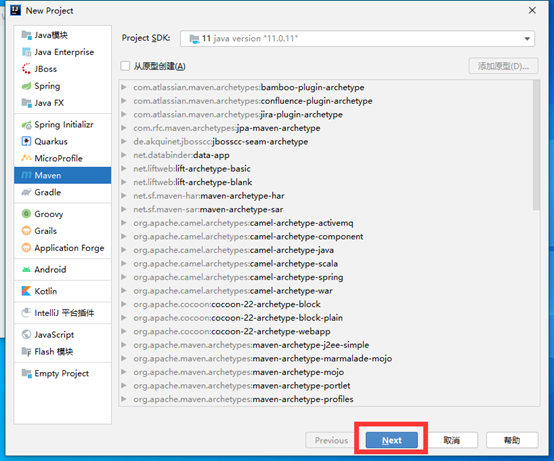

（二）、在POM中添加依赖
xxxxxxxxxx121 <parent>2 <groupId>org.springframework.boot</groupId>3 <artifactId>spring-boot-starter-parent</artifactId>4 <version>2.3.4.RELEASE</version>5 </parent>6 7 <dependencies>8 <dependency>9 <groupId>org.springframework.boot</groupId>10 <artifactId>spring-boot-starter-web</artifactId>11 </dependency>12 </dependencies>（三）、创建主程序

（四）、使用@SpringBootApplication注解声明这是一个SpringBoot程序
xxxxxxxxxx41public class MyMain {3 4}（五）、创建main方法让主程序跑起来
xxxxxxxxxx71public class MyMain {3 4 public static void main(String[] args) {5 SpringApplication.run(MyMain.class,args);6 }7}（六）、创建控制层类
xxxxxxxxxx101//Controller和RequestBody的合体2public class MyController {4 5 //创建一个控制器6 ("/hello")7 public String test1(){8 return "hello";9 }10}（七）、创建配置文件application.properties
xxxxxxxxxx21# 设置端口号2server.port=8888（八）、一键打包设置
xxxxxxxxxx81 <build>2 <plugins>3 <plugin>4 <groupId>org.springframework.boot</groupId>5 <artifactId>spring-boot-maven-plugin</artifactId>6 </plugin>7 </plugins>8 </build>（九）、打包

（十）、修改自己需要的版本依赖（如mysql）
xxxxxxxxxx31 <properties>2 <mysql.version>8.0.21</mysql.version>3 </properties>（十一）、扩展包扫描范围
xxxxxxxxxx71(scanBasePackages = "com.ma")2public class MyMain {3 4 public static void main(String[] args) {5 SpringApplication.run(MyMain.class,args);6 }7}二、注解
(一)、@configuration注解
- 说明：
该注解用于类上，表明该类是一个Spring管理器
- proxyBeanMethods属性：
当proxyBeanMethods为false的时候就不是单例模式了 当为true的时候都是从容器中获取的一个对象
xxxxxxxxxx171(proxyBeanMethods = true)2public class MyController {3
4 /**5 * 当@Bean后面每值的时候ioc中容器的名字为方法名6 * 当@Bean中有名字的时候ioc中容器名字为value值7 * @return8 */9 ("user")10 public User user1(){11 return new User(18,"小马");12 }13
14 15 public Pat cat(){16 return new Pat("小猫","吃老鼠");17 }- 使用：
xxxxxxxxxx121//调用启动器获取对象2ConfigurableApplicationContext run = SpringApplication.run(MyMain.class, args);3 4//获得ioc容器中user对象5//测试@Bean中带名字6User user = run.getBean("user", User.class);7System.out.println(user);8
9//获得ioc容器中cat10//测试@Bean中不带名字11Pat cat = run.getBean("cat", Pat.class);12System.out.println(cat);(二)、@imput注解（”User.class”）
- 说明：
导入特定的组件，默认是类的全类名
xxxxxxxxxx11({User.class})- 测试：
xxxxxxxxxx51//获取全部组件2String[] beanNamesForType = run.getBeanNamesForType(User.class);3for (String s : beanNamesForType) {4 System.out.println(s);5}- 结果：
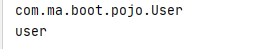
(三)、@conditional注解
- 说明：
当达成某个条件的时候才向ioc中注册组件
- 使用：
xxxxxxxxxx121//当容器中有cat组件的时候才注册user2(name = "user")3("user")4public User user1(){5 return new User(18,"小马");6}7 8//当容器中有cat的时候注册MyController中的所有方法9({User.class})10(name = "user") 12public class MyController {(四)、@InportResource注解
- 说明：
将XML中的所有Bean注册到容器中
- XML:
xxxxxxxxxx121 2<beans xmlns="http://www.springframework.org/schema/beans"3 xmlns:xsi="http://www.w3.org/2001/XMLSchema-instance"4 xsi:schemaLocation="http://www.springframework.org/schema/beans http://www.springframework.org/schema/beans/spring-beans.xsd">5 6 <beans>7 <bean id="haha" class="com.ma.boot.pojo.User">8 <property name="name" value="zhangsan"/>9 <property name="age" value="19"/>10 </bean>11 </beans> 12</beans>- Spring配置类
xxxxxxxxxx21(classPath:beans.xml)2Public class MyConfig (五)、@ConfigurationProperties(prefix = "person")
- 说明:
读取配置文件注入属性,但pojo类必须在容器中
(六)、第一种方式:pojo加入容器
- 配置文件:
xxxxxxxxxx41# person属性注入2person.age=183person.name=马佳盛4person.gender=男- Pojo类:
xxxxxxxxxx101 //加入容器5(prefix = "person") //开启文件配置注入前缀为person6public class Person {7 private int age;8 private String name;9 private String gender;10}- 控制器测试:
xxxxxxxxxx191public class MyController {3
4 //自动装配5 private Person person;6
7 /**8 * 创建一个控制器9 */10 ("/hello")11 public String test1(){12 return "hello";13 }14
15 ("/hello1")16 public Person test2(){17 return person;18 }19}(七)、第二种方式:使用EnableConfigurationProperties
- 控制器测试:
xxxxxxxxxx201(Person.class) //开启配置文件注入并加入容器3public class MyController {4
5 6 private Person person;7
8 /**9 * 创建一个控制器10 */11 ("/hello")12 public String test1(){13 return "hello";14 }15
16 ("/hello1")17 public Person test2(){18 return person;19 }20}三、SpringBoot的自动配置
(一)、自动配置【源码分析】-自动包规则原理
1、Spring Boot启动类
xxxxxxxxxx61 //声明该类为SpringBoot配置类2public class MainApplication {3 public static void main(String[] args) {4 SpringApplication.run(MainApplication.class, args);5 }6}2、SpringBootApplication底层
xxxxxxxxxx181(ElementType.TYPE)2(RetentionPolicy.RUNTIME)3 //配置类6 //开启自动装配7( //包扫描8 excludeFilters = {(9 type = FilterType.CUSTOM,10 classes = {TypeExcludeFilter.class}11), (12 type = FilterType.CUSTOM,13 classes = {AutoConfigurationExcludeFilter.class}14)}15)16public @interface SpringBootApplication {17 ...18}重点分析@SpringBootConfiguration，@EnableAutoConfiguration，@ComponentScan
3、@SpringBootConfiguration
只是一个配置类
4、@ComponentScan
只是一个扫描类
5、@EnableAutoConfiguration
xxxxxxxxxx111(ElementType.TYPE)2(RetentionPolicy.RUNTIME)3(AutoConfigurationImportSelector.class)7public @interface EnableAutoConfiguration {8 String ENABLED_OVERRIDE_PROPERTY = "spring.boot.enableautoconfiguration";9 Class<?>[] exclude() default {};10 String[] excludeName() default {};11}重点分析: @AutoConfigurationPackage,@Import(AutoConfigurationImportSelector.class)
6、@AutoConfigurationPackage
自动配置包，指定了默认的包规则。
xxxxxxxxxx91(ElementType.TYPE)2(RetentionPolicy.RUNTIME)3(AutoConfigurationPackages.Registrar.class)//给容器中导入一个组件6public @interface AutoConfigurationPackage {7 String[] basePackages() default {};8 Class<?>[] basePackageClasses() default {};9}- 利用Registrar给容器中导入一系列组件
- 将指定的一个包下的所有组件导入进MainApplication所在包下。
(二)、自动配置【源码分析】-初始加载自动配置类
@Import(AutoConfigurationImportSelector.class)
(1)、利用getAutoConfigurationEntry(annotationMetadata);给容器中批量导入一些组件
(2) 、调用List
(3) 、利用工厂加载 Map<String, List
(4) 、从META-INF/spring.factories位置来加载一个文件。
4.1、默认扫描我们当前系统里面所有META-INF/spring.factories位置的文件
4.2 、spring-boot-autoconfigure-2.3.4.RELEASE.jar包里面也有META-INF/spring.factories
xxxxxxxxxx71# 文件里面写死了spring-boot一启动就要给容器中加载的所有配置类2# spring-boot-autoconfigure-2.3.4.RELEASE.jar/META-INF/spring.factories3# Auto Configure4org.springframework.boot.autoconfigure.EnableAutoConfiguration=\5org.springframework.boot.autoconfigure.admin.SpringApplicationAdminJmxAutoConfiguration,\6org.springframework.boot.autoconfigure.aop.AopAutoConfiguration,\7...虽然我们127个场景的所有自动配置启动的时候默认全部加载，但是xxxxAutoConfiguration按照条件装配规则（@Conditional），最终会按需配置。
(三)、总结:
1.SpringBoot先加载所有的自动配置类 xxxxxAutoConfiguration
2.每个自动配置类按照条件进行生效，默认都会绑定配置文件指定的值。（xxxxProperties里面读取，xxxProperties和配置文件进行了绑定）
3.生效的配置类就会给容器中装配很多组件
4.只要容器中有这些组件，相当于这些功能就有了
5.定制化配置
5.1 用户直接自己@Bean替换底层的组件
5.2 用户去看这个组件是获取的配置文件什么值就去修改。
四、yaml的用法
(一)、基本语法
· key: value；kv之间有空格
· 大小写敏感
· 使用缩进表示层级关系
· 缩进不允许使用tab，只允许空格
· 缩进的空格数不重要，只要相同层级的元素左对齐即可
· '#'表示注释
· 字符串无需加引号，如果要加，单引号’’、双引号""表示字符串内容会被 转义、不转义
(二)、数据类型
1、基础类型
K: v 如:name: 张三
2、对象类型
2.1、行内写法
K: {k1:k1,k2:k2,k3:k3}
2.2、多行写法
K:
K1:k1
K2:k2
K3:k3
3、数组
3.1、行内写法
K: [k1,k2,k3]
3.2、多行写法
K:
- K1
- K2
- K3
(三)、实例:
1、创建一个yaml文件

2、创建实体类
2.1、创建person类
xxxxxxxxxx181(prefix = "person")6public class Person {7
8 private String userName;9 private Boolean boss;10 private Date birth;11 private Integer age;12 private Pet pet;13 private String[] interests;14 private List<String> animal;15 private Map<String, Object> score;16 private Set<Double> salarys;17 private Map<String, List<Pet>> allPets;18}2.2、创建Pet类
xxxxxxxxxx71public class Pet {4
5 private String name;6 private Double weight;7}3、注入属性
xxxxxxxxxx191person2 userNamezhangsan3 bosstrue4 birth2021/10/255 age186 pet7 name阿狗8 weight52.19 interests篮球rap10 animal小狗小猫11 score语文90数学:3012 salarys19999.915555.513 allPets14 shengbing15name小狗weight30.316name小猫weight40.217 meishengbing18name小花weight52.219name小明weight30.44、测试:
xxxxxxxxxx41("/hello1")2public Person test2(){3 return person;4}
附加:Yaml中单引号和双引号的区别
单引号:纯纯字符串
双引号:\n代表换行
(四)、提示插件
1、添加依赖
xxxxxxxxxx51<dependency>2 <groupId>org.springframework.boot</groupId>3 <artifactId>spring-boot-configuration-processor</artifactId>4 <optional>true</optional>5</dependency>2、打包时不打包
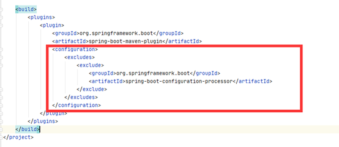
五、创建一个简单的web工程
(一)、创建项目
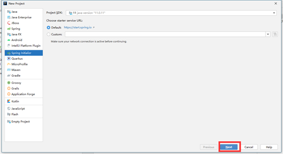

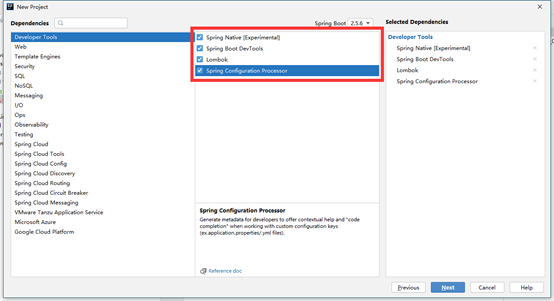


(二)、创建文件夹

(三)、访问直接网址/资源名
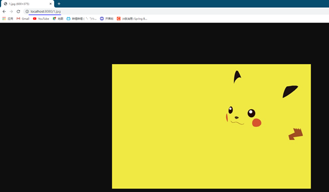
六、静态资源的处理
(一)、更改访问位置
1、在控制类中添加名字相同的资源名
xxxxxxxxxx91.springframework.stereotype.Controller2public class Controller {4
5 ("1.jpg")6 public String test1(){7 return "aaa";8 }9}2、测试
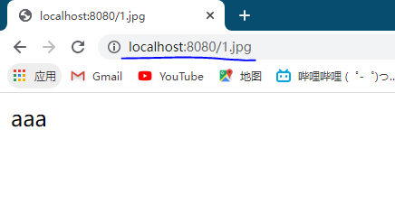
3、原理
默认访问的资源名拦截请求是/**,默认在全部位置查找
RequestMapping也是/**,默认全部查找
所以先找动态资源(RequestMapping),再找静态资源
(二)、更改默认资源访问位置
在application.properites中添加
Spring.mvc.static-path-pattern=访问路径
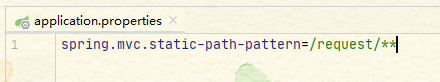
测试

(三)、更改静态资源访问路径
在application.properties中添加
Spring.web.resources.static-locations=路径名

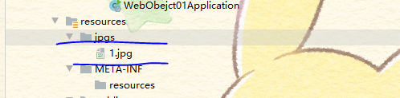
测试

七、欢迎页
(一)、静态资源模式
直接在几个静态资源目录中存放index.html

然后进行网页访问

(二)、控制层方法模式
在控制层类中添加index的映射,访问主目录的时候就会自动查找
(三)、小图标显示
在静态资源下添加Favicon.ico就会默认将网页小图标替换为Favicon.ico图标,没有网,凑和看,修改的就是这东西

八、PUT和DELETE请求的处理
(一)、HTML网页
xxxxxxxxxx151<h1>欢迎来到我的网页</h1>2<form action="/user" method="get">3 <input type="submit" value="get方式提交"/>4</form>5<form action="/user" method="post">6 <input type="submit" value="post提交"/>7</form>8<form action="/user" method="post">9 <input type="hidden" name="_method" value="DELETE">10 <input type="submit" value="delete提交"/>11</form>12<form action="/user" method="post">13 <input type="hidden" name="_method" value="put">14 <input type="submit" value="put提交"/>15</form>(二)、Controller
xxxxxxxxxx241.springframework.stereotype.Controller2public class Controller {4 ("2.jpg")5 public String test1(){6 return "aaa";7 }8 (value = "/user",method = RequestMethod.GET)9 public String getUser(){10 return "GET-张三";11 }12 (value = "/user",method = RequestMethod.POST)13 public String saveUser(){14 return "POST-张三";15 }16 (value = "/user",method = RequestMethod.PUT)17 public String putUser(){18 return "PUT-张三";19 }20 (value = "/user",method = RequestMethod.DELETE)21 public String deleteUser(){22 return "DELETE-张三";23 }24}(三)、开启拦截器拦截请求更改提交方式
xxxxxxxxxx51spring2 mvc3 hiddenmethod4 filter5 enabledtrue(四)、Rest原理
表单提交会带上_method=PUT
请求过来被HiddenHttpMethodFilter拦截
请求是否正常，并且是POST
获取到_method的值。
兼容以下请求；PUT.DELETE.PATCH
原生request（post），包装模式requesWrapper重写了getMethod方法，返回的是传入的值。
过滤器链放行的时候用wrapper。以后的方法调用getMethod是调用requesWrapper的。
(五)、修改默认Rest请求name
1.创建一个web配置类

2.添加注解,代理模式为false
xxxxxxxxxx21(proxyBeanMethods = false)2public class WebConfig {3.创建自己的HiddenHttpMethodFilter
xxxxxxxxxx61public HiddenHttpMethodFilter hiddenHttpMethodFilter(){3 HiddenHttpMethodFilter methodFilter = new HiddenHttpMethodFilter();4 methodFilter.setMethodParam("_met"); //返回自己识别的name5 return methodFilter;6}九、接受参数
@PathVariable(restful风格获取参数)
@RequestHeader(获取请求头)
@RequestParam(获取请求参数 ? 的形式)
@CookieValue(获取cookie的值)
@RequestBody(获取请求体 非get请求)
@RequestAttribute(获取request域的值)
@MatrixVariable(矩阵变量)
(一)、接受简单的参数
xxxxxxxxxx141("/person/{id}/zhangsan/{xuhao}")2public Map<String, Object> getPerson(("id") String id,3 ("xuhao") Integer xuhao,4 Map<String,Object> parMap,5 ("Host")String hosts,6 Map<String, Object> mapHead){7 Map<String,Object> map = new HashMap<>();8 map.put("id",id);9 map.put("suhao",xuhao);10 map.put("parMap",parMap);11 map.put("Host",hosts);12 map.put("mapHead",mapHead);13 return map;14}(二)、接受请求域的值
xxxxxxxxxx191("/textAtbt")2public String setRequestAtbt(HttpServletRequest request){3 request.setAttribute("name","张三");4 request.setAttribute("age",18);5 return "forward:success";6}7
8("/success")10public Map<String,Object> getRequestAtbt(("name")String name,11 ("age")Integer age,12 HttpServletRequest request){13 Map<String, Object> map = new HashMap<>();14 map.put("name",name);15 map.put("age",age);16 String name1 = request.getParameter("name");17 System.out.println(name1);18 return map;19}(三)、接受矩阵变量
1、语法：
请求路径：/cars/sell;low=34;brand=byd,audi,yd
变量以;隔开,如果有多个值使用,隔开
2、开启矩阵变量功能
实现WebMvcConfigurer接口：手动开启：原理。对于路径的处理。UrlPathHelper的removeSemicolonContent设置为false，让其支持矩阵变量的。
手动开启矩阵变量
xxxxxxxxxx101 (proxyBeanMethods = false)2 public class WebConfig implements WebMvcConfigurer {3 4 public void configurePathMatch(PathMatchConfigurer configurer) {5 UrlPathHelper urlPathHelper = new UrlPathHelper();6 // 不移除；后面的内容。矩阵变量功能就可以生效7 urlPathHelper.setRemoveSemicolonContent(false);8 configurer.setUrlPathHelper(urlPathHelper);9 }10}3、矩阵变量必须有url路径才能解析
4、案例:
映射器
xxxxxxxxxx131("ren/{da}/{xiao}")2public Map<String, Object> ren((value = "name", pathVar = "da") String daName,3 (value = "name", pathVar = "xiao")String xiaoName,4 (value = "age",pathVar = "da")Integer daAge,5 (value = "age",pathVar = "xiao")Integer xiaoAge){6
7 Map<String, Object> map = new HashMap<>();8 map.put("大姓名",daName);9 map.put("小姓名",xiaoName);10 map.put("大年龄",daAge);11 map.put("小年龄",xiaoAge);12 return map;13}访问地址+结果
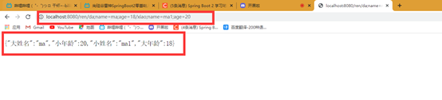
(四)、Map、Model参数原理
Map和Model的数据会存放在request请求与中
案例:
xxxxxxxxxx351.springframework.stereotype.Controller2public class Controller {3
4 ("/params")5 public String testParams(Map<String,Object> map,6 Model model,7 HttpServletRequest request,8 HttpServletResponse response){9
10 map.put("putMap","putMap");11 model.addAttribute("putModel","putModel");12 request.setAttribute("putRequest","putRequest");13 return "forward:/success";14 }15
16 17 ("/success")18 public Map<String, Object> success ((value = "putMap",required = false)String msg,19 (value = "putRequest",required = false)String myRequest,20 (value = "putModel",required = false)String myModel,21 HttpServletRequest request){22 Map<String, Object> map = new HashMap<>();23 map.put("getMap",msg);24 map.put("getRequest",myRequest);25 map.put("getModel",myModel);26
27 Object map1 = request.getAttribute("putMap");28 Object request1 = request.getAttribute("putRequest");29 Object model1 = request.getAttribute("putModel");30 map.put("map1",map1);31 map.put("request1",request1);32 map.put("model1",model1);33 return map;34 }35}(五)、使用自己的JavaBean接收参数并赋值
1、自定义JavaBean
Person
xxxxxxxxxx71public class Person {3
4 private String name;5 private Integer age;6 private Pat pat;7}Pat
xxxxxxxxxx51public class Pat {3 private String name;4 private Integer age;5}2、HTML
xxxxxxxxxx71<form action="/person" method="get">2 姓名:<input type="text" value="张三" name="name">3 年龄:<input type="text" value="15" name="age">4 宠物名:<input type="text" value="小猫" name="pat.name">5 宠物年龄:<input type="text" value="14" name="pat.age">6 <input type="submit" value="提交">7</form>3、控制器
xxxxxxxxxx51("/person")3public Person getPerson(Person person){4 return person;5}(六)、使用逗号隔开参数接收(如:猫,15)
1、自定义JavaBean
Person
xxxxxxxxxx71public class Person {3
4 private String name;5 private Integer age;6 private Pat pat;7}Pat
xxxxxxxxxx51public class Pat {3 private String name;4 private Integer age;5}2、HTML
xxxxxxxxxx61<form action="/person" method="get">2 姓名:<input type="text" value="张三" name="name">3 年龄:<input type="text" value="15" name="age">4 宠物:<input type="text" value="小猫,15" name="pat">5 <input type="submit" value="提交">6</form>3、开启分割参数设置
在WebConfiguration注解下的控制器中添加
xxxxxxxxxx231public WebMvcConfigurer webMvcConfigurer(){3 return new WebMvcConfigurer() {4
5 6 public void addFormatters(FormatterRegistry registry) {7 registry.addConverter(new Converter<String, Pat>() {8
9 10 public Pat convert(String source) {11 if(!StringUtils.isEmpty(source)){12 Pat pat = new Pat();13 String [] split = source.split(",");14 pat.setName(split[0]);15 pat.setAge(Integer.valueOf(split[1]));16 return pat;17 }18 return null;19 }20 });21 }22 };23}4、控制器
xxxxxxxxxx51("/person")3public Person getPerson(Person person){4 return person;5}十、响应数据
(一)、基于请求头的内容协商
1、导入支持返回JSON包
xxxxxxxxxx61<dependency>2 <groupId>org.springframework.boot</groupId>3 <artifactId>spring-boot-starter-json</artifactId>4 <version>2.3.4.RELEASE</version>5 <scope>compile</scope>6</dependency>2、导入支持返回XML包
xxxxxxxxxx41<dependency>2 <groupId>com.fasterxml.jackson.dataformat</groupId>3 <artifactId>jackson-dataformat-xml</artifactId>4</dependency>3、控制层返回对象
xxxxxxxxxx121public class ResponseTestController {3 //利用返回值处理器里面的消息转换器进行处理4 (value = "/test/person")5 public Person getPerson(){6 Person person = new Person();7 person.setAge(28);8 person.setBirth(new Date());9 person.setUserName("zhangsan");10 return person;11 }12}4、 内容协商
客户端发送数据的时候会发送请求头Accept,告诉服务器自己能接受什么的类型(类型根据权重判断优先级),然后服务器根据权重向客户端发送数据,如果不支持大的权重会往下走,知道匹配到最佳的返回方式
(二)、基于请求参数的内容协商
1、在yaml中添加配置
xxxxxxxxxx41spring2 mvc3 contentnegotiation4 favor-parametertrue 2、请求参数中携带format请求=返回方式
xxxxxxxxxx21http://localhost:8080/test/person?format=json //返回JSON2http://localhost:8080/test/person?format=xml //返回XML

(三)、自定义请求头And参数内容协商
1、创建自己的MessageConverters
xxxxxxxxxx341public class MyConverter implements HttpMessageConverter<Person> {2
3 //是否支持读4 5 public boolean canRead(Class<?> clazz, MediaType mediaType) {6 return false;7 }8
9 //是否支持写10 11 public boolean canWrite(Class<?> clazz, MediaType mediaType) {12 return clazz.isAssignableFrom(Person.class);13 }14
15 //返回支持的格式名16 17 public List<MediaType> getSupportedMediaTypes() {18 return MediaType.parseMediaTypes("application/x-ma");19 }20
21
22 23 public Person read(Class<? extends Person> clazz, HttpInputMessage inputMessage) throws IOException, HttpMessageNotReadableException {24 return null;25 }26
27 //发送客户端数据形式28 29 public void write(Person person, MediaType contentType, HttpOutputMessage outputMessage) throws IOException, HttpMessageNotWritableException {30 String date = person.getName()+";"+person.getAge();31 OutputStream body = outputMessage.getBody();32 body.write(date.getBytes());33 }34}2、添加到底层WebConfiguration设置
xxxxxxxxxx491(proxyBeanMethods = false)2public class WebConfig implements WebMvcConfigurer {3
4 5 public WebMvcConfigurer webMvcConfigurer() {6 return new WebMvcConfigurer() {7
8 //覆盖底层的MessageMyConverter9 10 public void configureContentNegotiation(ContentNegotiationConfigurer configurer) {11
12 Map<String, MediaType> mediaType = new HashMap<>();13 mediaType.put("json", MediaType.APPLICATION_JSON); //json方式14 mediaType.put("xml", MediaType.APPLICATION_XML); //xml方式15 mediaType.put("aaa", MediaType.parseMediaType("application/x-ma")); //将自己的装入底层16 ParameterContentNegotiationStrategy parameterContentNegotiationStrategy = new ParameterContentNegotiationStrategy(mediaType); //参数形式17 HeaderContentNegotiationStrategy headerContentNegotiationStrategy = new HeaderContentNegotiationStrategy(); //请求头方式18
19 configurer.strategies(Arrays.asList(parameterContentNegotiationStrategy, headerContentNegotiationStrategy));20 }21
22 23 //参数可以以,分开赋值24 25 public void addFormatters(FormatterRegistry registry) {26 registry.addConverter(new Converter<String, Pat>() {27
28 29 public Pat convert(String source) {30 if (!StringUtils.isEmpty(source)) {31 Pat pat = new Pat();32 String[] split = source.split(",");33 pat.setName(split[0]);34 pat.setAge(Integer.valueOf(split[1]));35 return pat;36 }37 return null;38 }39 });40 }41 42 //添加自己的方法43 44 public void extendMessageConverters(List<HttpMessageConverter<?>> converters) {45 converters.add(new MyConverter());46 }47 };48 }49}十一、Thymeleaf
(一)、简单实用
1、基础语法
| 表达式名字 | 语法 | 用途 |
|---|---|---|
| 变量取值 | ${…} | 获取请求域、session域、对象等值 |
| 选择变量 | *{…} | 获取上下文对象值 |
| 消息 | #{…} | 获取国际化等值 |
| 链接 | @{…} | 生成链接 |
| 片段表达式 | ~{…} | jsp:include 作用，引入公共页面片段 |
2、设置属性值-th:attr
· 设置单个值
xxxxxxxxxx11<input type="submit" value="Subscribe!"th:attr="value=#{subscribe.submit}"/>· 设置多个值
xxxxxxxxxx21<img src="../../images/gtvglogo.png" 2 th:attr="src=@{/images/gtvglogo.png},title=#{logo},alt=#{logo}" />3、循环
xxxxxxxxxx51<tr th:each="prod : ${prods}">2 <td th:text="${prod.name}">Onions</td>3 <td th:text="${prod.price}">2.41</td>4 <td th:text="${prod.inStock}? #{true} : #{false}">yes</td>5</tr>4、条件
If
xxxxxxxxxx41<a href="comments.html"2 th:href="@{/product/comments(prodId=${prod.id})}"3 th:if="${not #lists.isEmpty(prod.comments)}">view4</a>switch
xxxxxxxxxx51<div th:switch="${user.role}">2 <p th:case="'admin'">User is an administrator</p>3 <p th:case="#{roles.manager}">User is a manager</p>4 <p th:case="*">User is some other thing</p>5</div>(二)、Thymeleaf初体验
1、导入Thymeleaf依赖
xxxxxxxxxx41<dependency>2 <groupId>org.springframework.boot</groupId>3 <artifactId>spring-boot-starter-thymeleaf</artifactId>4</dependency>2、只需要根据底层的设置创建网页即可
底层
xxxxxxxxxx21public static final String DEFAULT_PREFIX = "classpath:/templates/"; //模板放置处2public static final String DEFAULT_SUFFIX = ".html"; //文件的后缀名创建网页文件

2、 控制层链接
xxxxxxxxxx91.springframework.stereotype.Controller2public class Controller {3
4 ("/testThymeleaf")5 public String testThymeleaf(Model model){6 model.addAttribute("msg","欢迎使用Thymeleaf");7 model.addAttribute("url","www.fanyi.com");8 return "success";9 }4、网页代码
xxxxxxxxxx51<body>2<h1 th:text="${msg}">Hello World</h1>3
4<a th:href="@{url}">www.baidu.com</a>5</body>十二、后台管理系统
(一)创建项目
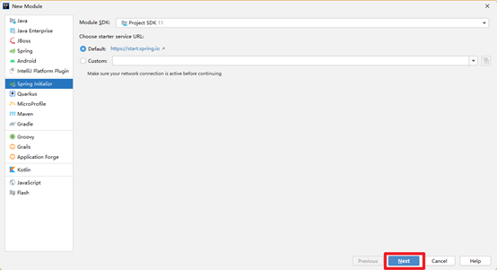

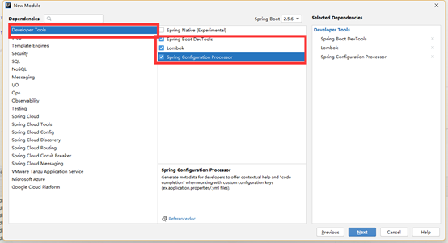

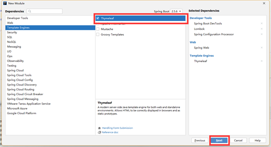
(二)、登录和主页名字配置
1、复制login.html和index.html到templates目录,index.html改为main.html
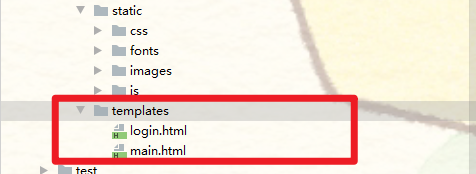
2、Controller设置
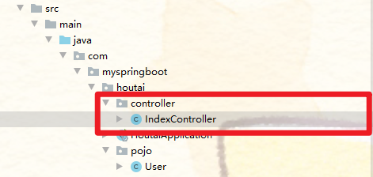
3、Controller代码
xxxxxxxxxx331public class IndexController {3
4 //设置访问目录,如果是/或/login跳转到login目录5 (value = {"/","/login"})6 public String indexPage(){7 return "login";8 }9
10 //登录时判断是否登录成功,成功重定向主页,防止不断提交,不成功返回并提示11 ("/login")12 public String mainPage(User user, Model model,HttpServletRequest request){13 if(StringUtils.hasLength(user.getUserName()) && "123456".equals(user.getPassWord())){14 request.getSession().setAttribute("loginUser",user);15 return "redirect:/main.html";16 }else {17 model.addAttribute("loginMsg","登录失败");18 return "login";19 }20 }21
22 //判断是否登录过,登陆过跳转,没登录跳转到登录页面23 (value ="main.html")24 public String mainPage(HttpServletRequest request){25 Object loginUser = request.getSession().getAttribute("loginUser");26 if(loginUser != null){27 return "main";28 }else {29 request.setAttribute("loginMsg","请先登录");30 return "login";31 }32 }33}4、登录表单提交设置
xxxxxxxxxx11<form class="form-signin" action="/login" method="post">5、修改主页为登录的用户名
xxxxxxxxxx31<img src="images/photos/user-avatar.png" alt="" />2[[${session.loginUser.userName}]]3<span class="caret"></span>(三)、抽取公共页面
1、抽取左菜单


2、抽取个人信息栏

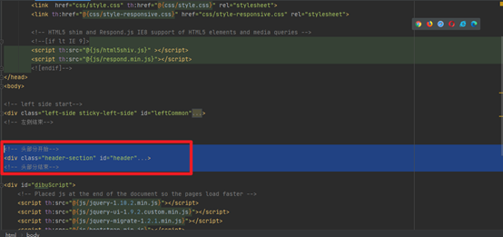
3、抽取头部js.css导入

4、抽取底部js.css导入

5、网页加入抽取部分

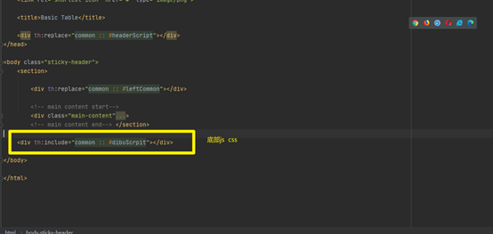
6、修改所有连接为类路径(根据需求改)
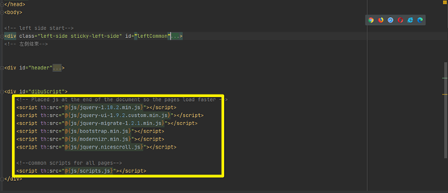
(四)、遍历网页数据
1、装入域数据
xxxxxxxxxx91("/dynamic_table")2 public String dynamic_table(Model model){3 List<User> users = Arrays.*asList*(new User("zhangsan","123456"),4 new User("lisi","222333"),5 new User("haha","333222"),6 new User("hehe","222222"));7 model.addAttribute("users",users);8 return "table/dynamic_table";9 }2、网页遍历域数据
xxxxxxxxxx51<tr class="gradeX" th:each="user,stats : ${users} ">2 <td th:text="${stats.count}">Win 95+</td>3 <td th:text="${user.getUserName()}"></td>4 <td th:text="${user.getPassWord()}"></td>5 </tr>(五)、拦截器
1、创建一个拦截器类(实现HanderlInterceptor)
xxxxxxxxxx361public class LoginInterceptor implements HandlerInterceptor {3
4 //访问数据处理业务之前5 6 public boolean preHandle(HttpServletRequest request, HttpServletResponse response, Object handler) throws Exception {7
8 //获得session9 HttpSession session = request.getSession();10 //取出session中用户的值11 Object loginUser = session.getAttribute("loginUser");12 //判断用户是否为空13 if(loginUser != null){14 //不为空放行15 return true;16 }17
18 //为空添加域信息返回给客户端并显示19 request.setAttribute("loginMsg","请先登录");20 //转发到登录页面21 request.getRequestDispatcher("/").forward(request,response);22 return false;23 }24
25 //访问数据处理业务之后26 27 public void postHandle(HttpServletRequest request, HttpServletResponse response, Object handler, ModelAndView modelAndView) throws Exception {28
29 }30
31 //视图渲染之后32 33 public void afterCompletion(HttpServletRequest request, HttpServletResponse response, Object handler, Exception ex) throws Exception {34
35 }36}2、将自定义拦截器添加到容器中
xxxxxxxxxx131public class LoginInterceptorConfig implements WebMvcConfigurer {3
4 5 public void addInterceptors(InterceptorRegistry registry) {6 //添加的自定义拦截器7 registry.addInterceptor(new LoginInterceptor())8 //拦截什么规则9 .addPathPatterns("/**")10 //排除规则11 .excludePathPatterns("/","/login","/css/**","fonts/**","/images/**","/js/**");12 }13}3、拦截器机制原理
根据当前请求，找到HandlerExecutionChain（可以处理请求的handler以及handler的所有 拦截器）
先来顺序执行 所有拦截器的 preHandle()方法。
如果当前拦截器preHandle()返回为true。则执行下一个拦截器的preHandle()
a) 如果当前拦截器返回为false。直接倒序执行所有已经执行了的拦截器的 afterCompletion();。
b) 如果任何一个拦截器返回false，直接跳出不执行目标方法。
c) 所有拦截器都返回true，才执行目标方法。
倒序执行所有拦截器的postHandle()方法。
前面的步骤有任何异常都会直接倒序触发 afterCompletion()。
页面成功渲染完成以后，也会倒序触发 afterCompletion()。

假如第二个preHandle错误,就不会执行第三个的preHandle,直接执行第二个的afterCompletion,再执行第一个afterCompletion。
十三、文件上传
(一)、复制网页进IDEA
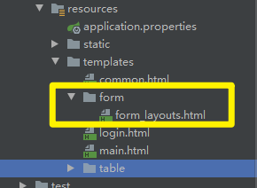
(二)、添加访问的Controller
xxxxxxxxxx41("/form_layouts")2public String form_layouts(){3 return "form/form_layouts";4}(三)、修改公共页的跳转路径
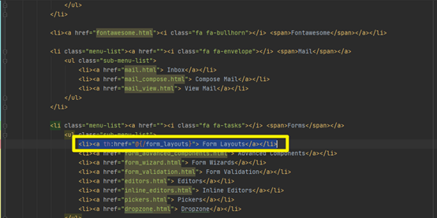
(四)、修改表单提交为上传表单

(五)、Controller接受文件
xxxxxxxxxx251("/upload")2public String requestFile(("email") String email,3 ("username")String username,4 ("headerImg")MultipartFile headerImg,5 ("photos") MultipartFile[] photos) throws IOException {6 //打印接受的参数信息7 log.info("上传的信息：email={}，username={}，headerImg={}，photos={}",8 email,username,headerImg.getSize(),photos.length);9 //判断是否为空10 if(!headerImg.isEmpty()){11 //获取上传的文件名12 String originalFilename = headerImg.getOriginalFilename();13 //储存到本地路径14 headerImg.transferTo(new File("F:\\SpringBootFileTest\\"+originalFilename));15 }16 if(photos.length>0){17 for (MultipartFile photo : photos) {18 if(!photo.isEmpty()){19 String originalFilename = photo.getOriginalFilename();20 photo.transferTo(new File("F:\\SpringBootFileTest\\shengh\\"+originalFilename));21 }22 }23 }24 return "redirect:/form_layouts";25}(六)、设置SpringBoot接受文件的大小
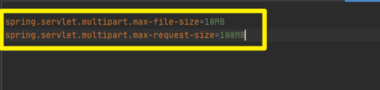
十四、异常处理
(一)、SpringBoot默认机制
在templates下创建/error放入错误页4xx,5xx,底层自动处理400,500的错误跳转到4xx,5xx的错误页
(二)、SpringBoot返回数据的方式
如果客户端使用浏览器发生错误,返回SpringBoot默认的错误页,如果客户端是机器访问,自动返回json数据
xxxxxxxxxx71{2 "timestamp": "2020-11-22T05:53:28.416+00:00",3 "status": 404,4 "error": "Not Found",5 "message": "No message available",6 "path": "/asadada"7}(三)、自定义异常处理
1、类头加@ControllerAdvice,方法头加@ExceptionHandler
@ExceptionHandler({添加预想的异常})
当服务器出现预想的异常的时候就会自动跳转到此方法处理
xxxxxxxxxx101public class GlobalExceptionHandler {3 4 //当发生计算错误和空指针错误的时候抛出此异常5 ({ArithmeticException.class,NullPointerException.class})6 public String handleArithException(){7 //发生异常跳转到登录页面8 return "login";9 }10 }2、自定义抛出的异常
类头添加@ResponseStatus注解
xxxxxxxxxx61//状态码异常注解 value = 状态码,报错信息2(value = HttpStatus.*FORBIDDEN*,reason = "用户数量过多")3public class UserTooManyException extends RuntimeException{4 5 public UserTooManyException(){}6}当用户超过3个的时候抛出自定义异常
xxxxxxxxxx131("/dynamic_table")2public String dynamic_table(Model model) {3 List<User> users = Arrays.*asList*(new User("zhangsan", "123456"),4 new User("lisi", "222333"),5 new User("haha", "333222"),6 new User("hehe", "222222"));7 model.addAttribute("users", users);8 9 if(users.size()>3){10 throw new UserTooManyException();11 }12 return "table/dynamic_table";13}3、定义自己的异常状态码和信息
当发生错误的时候,由于优先级的问题,首先使用这个异常,这个中的方法返回ModelAndView的时候异常不再循环,直接返回方法中定义的错误
xxxxxxxxxx161//优先级最小 越小越优先2(value = Ordered.*HIGHEST_PRECEDENCE*)3//添加到容器中4public class CustomerHandlerExceptionResolver implements HandlerExceptionResolver {6 7 public ModelAndView resolveException(HttpServletRequest request, HttpServletResponse response, Object handler, Exception ex) {8 try {9 //定义状态码,错误信息10 response.sendError(333,"我喜欢的错误");11 } catch (IOException e) {12 e.printStackTrace();13 }14 return new ModelAndView();15 }16 }十五、原生组件注入
(一)、使用原生注解方式添加原生组件
使用原生组件都要在启动类中添加@ServletComponenScan注解
xxxxxxxxxx21//开启Servlet扫描2 1、添加原生的Servlet
配置Servlet类继承HttpServlet
xxxxxxxxxx101//声明为原生的Servlet(urlPattern = 配置路径)2
3(urlPatterns = "/MyServlet")4public class PrimordialServlet extends HttpServlet {5 6 7 protected void doGet(HttpServletRequest req, HttpServletResponse resp) throws ServletException, IOException {8 resp.getWriter().write("我是原生的Servlet组件");9 }10} 2、添加原生的filter
创建Filter类实现Filter接口
xxxxxxxxxx181public class PrimordialFilter implements Filter {4 5 public void init(FilterConfig filterConfig) throws ServletException {6 *log*.info("Filter初始化");7 }8
9 10 public void doFilter(ServletRequest request, ServletResponse response, FilterChain chain) throws IOException, ServletException {11 *log*.info("Filter处理业务");12 }13
14 15 public void destroy() {16 *log*.info("Filter销毁");17 }18 }访问不到,拦截器拦截


因在IDEA中停止程序相当于拔电源,所以无法测试销毁方法
3、添加原生的Listener
创建类继承ServletContextListener
xxxxxxxxxx161public class PrimordialListener implements ServletContextListener {4
5 //初始化方法6 7 public void contextInitialized(ServletContextEvent sce) {8 *log*.info("服务器启动");9 }10
11 //销毁方法12 13 public void contextDestroyed(ServletContextEvent sce) {14 *log*.info("服务器关闭");15 }16 } 
因在IDEA中停止程序相当于拔电源,所以无法测试销毁方法
(二)、使用WebConfiguration注册原生的Servlet
1、创建三个基础类
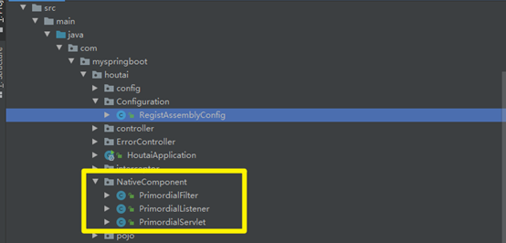
- Filter
xxxxxxxxxx171public class PrimordialFilter implements Filter {3 4 public void init(FilterConfig filterConfig) throws ServletException {5 *log*.info("Filter初始化");6 }7 8 9 public void doFilter(ServletRequest request, ServletResponse response, FilterChain chain) throws IOException, ServletException {10 *log*.info("Filter处理业务");11 }12 13 14 public void destroy() {15 *log*.info("Filter销毁");16 }17 }- Servlet
xxxxxxxxxx71public class PrimordialServlet extends HttpServlet {2 3 4 protected void doGet(HttpServletRequest req, HttpServletResponse resp) throws ServletException, IOException {5 resp.getWriter().write("我是原生的Servlet组件");6 }7 }- Listener
xxxxxxxxxx151public class PrimordialListener implements ServletContextListener {3 4 //初始化方法5 6 public void contextInitialized(ServletContextEvent sce) {7 *log*.info("服务器启动");8 }9 10 //销毁方法11 12 public void contextDestroyed(ServletContextEvent sce) {13 *log*.info("服务器关闭");14 }15 }2、使用Webconfiguration注册三个组件
xxxxxxxxxx251public class RegistAssemblyConfig {3 4 5 public ServletRegistrationBean myServler(){6 PrimordialServlet primordialServlet = new PrimordialServlet();7 return new ServletRegistrationBean(primordialServlet,"/my","my2");8 }9 10 11 public FilterRegistrationBean myFilter(){12 PrimordialFilter primordialFilter = new PrimordialFilter();13 FilterRegistrationBean filterRegistrationBean = new FilterRegistrationBean(primordialFilter);14 filterRegistrationBean.setUrlPatterns(Arrays.*asList*("/my","/my2"));15 return filterRegistrationBean;16 17 }18 19 20 public ServletListenerRegistrationBean myListener(){21 PrimordialListener primordialListener = new PrimordialListener();22 return new ServletListenerRegistrationBean(primordialListener);23 }24 25 }(三)定制化Servlet容器
1.WebServerFactoryCustomizer
把配置文件的值和ServletWebServerFactory进行绑定
2.使用配置文件修改
3.直接定义ConfigurableServletWebServerFactory,XxxCustomizer:定制器,可以改变xxx的默认规则

十七、定制化SpringBoot组件的几种方式
(1)、修改配置文件
(2)、编写自定义配置类xxxConfiguration+@Bean替换或添加容器的默认组件,视图解析器
(3)、Web应用编写一个配置类实现WebMvcConfigurer即可定制化web功能+@Bean扩展一些组件
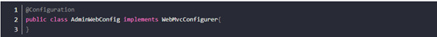
(4)、@EnableWebMvc+WebMvcConfighurer+@Bean可以完全接管SpringMVC,所有的规则自己配置(新手劝退,我直接tm的不学)

十八、切换WEB服务器
xxxxxxxxxx161<dependency>2 <groupId>org.springframework.boot</groupId>3 <artifactId>spring-boot-starter-web</artifactId>4 <exclusions>5 <!--排除tomcat启动器-->6 <exclusion> 7 <groupId>org.springframework.boot</groupId> 8 <artifactId>spring-boot-starter-tomcat</artifactId> 9 </exclusion> 10 </exclusions> 11</dependency> 12<!--添加jetty服务器 -->13<dependency> 14 <groupId>org.springframework.boot</groupId> 15 <artifactId>spring-boot-starter-jetty</artifactId> 16</dependency>十九、数据库连接操作
(一)、数据库场景配置
1、导入JDBC依赖
xxxxxxxxxx41<dependency>2 <groupId>org.springframework.boot</groupId>3 <artifactId>spring-boot-starter-data-jdbc</artifactId>4</dependency>2、导入MySQL驱动依赖
xxxxxxxxxx41<dependency>2 <groupId>mysql</groupId>3 <artifactId>mysql-connector-java</artifactId>4</dependency>3、相关数据源配置类
xxxxxxxxxx201# 数据源的自动配置。2DataSourceAutoConfiguration3
4# 修改数据源相关的配置,数据库连接池的配置，是自己容器中没有DataSource才自动配置的。底层配置好的连接池是：HikariDataSource。5spring.datasource6
7# 事务管理器的自动配置。8DataSourceTransactionManagerAutoConfiguration9
10# JdbcTemplate的自动配置，可以来对数据库进行CRUD。可以修改前缀为spring.jdbc的配置项来修改JdbcTemplate。11JdbcTemplateAutoConfiguration：12
13# Spring容器中有这个JdbcTemplate组件，使用@Autowired。14@Bean @Primary JdbcTemplate：15
16# JNDI的自动配置。17JndiDataSourceAutoConfiguration： 18
19# 分布式事务相关的。20XADataSourceAutoConfiguration： (二)、添加数据源
1、引入依赖
xxxxxxxxxx51<dependency>2 <groupId>com.alibaba</groupId>3 <artifactId>druid-spring-boot-starter</artifactId>4 <version>1.1.17</version>5</dependency>2、yaml文件添加配置(这样就能进入数据访问控制页)
xxxxxxxxxx321spring2 datasource3 urljdbcmysql//localhost3306/db_account4 usernameroot5 password1234566 driver-class-namecom.mysql.jdbc.Driver7 8 druid9 aop-patternscom.atguigu.admin.* # 监控SpringBean10 filtersstat,wall # 底层开启功能，stat（sql监控），wall（防火墙）11 12 stat-view-servlet# 配置监控页功能13 enabledtrue14 login-usernameadmin15 login-passwordadmin16 resetEnablefalse17 18 web-stat-filter# 监控web19 enabledtrue20 urlPattern/*21 exclusions'*.js,*.gif,*.jpg,*.png,*.css,*.ico,/druid/*'22 23 24 filter25 stat# 对上面filters里面的stat的详细配置26 slow-sql-millis100027 logSlowSqltrue28 enabledtrue29 wall30 enabledtrue31 config32 drop-table-allowfalse3、进入http://localhost: 8080/druid/sql.html进行访问
(三)、整合MyBatis
1、导入Mybatis的依赖
xxxxxxxxxx51<dependency>2 <groupId>org.mybatis.spring.boot</groupId>3 <artifactId>mybatis-spring-boot-starter</artifactId>4 <version>2.1.4</version>5</dependency>2、设置Mybatis的sql映射文件
xxxxxxxxxx21mybatis2 mapper-locationsclasspathmybatis/*.xml3、创建数据库实体类
xxxxxxxxxx71 3 public class User {4 5 private String userName;6 private String passWord;7 }4、创建操作实体的接口
xxxxxxxxxx41 public interface UserMapper {3 public User getUserById(Integer id);4 }5、接口对应的mapper文件
xxxxxxxxxx91 2 3 4 5 <mapper namespace="com.myspringboot.houtai.mapper.UserMapper">6 <select id="getUserById" resultType="com.myspringboot.houtai.pojo.User">7 select * from user where id=#{id}8 </select>9</mapper>6、创建Service操作接口
xxxxxxxxxx101public class UserService {3 4 5 private UserMapper userMapper;6 7 public User getUserById(Integer id){8 return userMapper.getUserById(1);9 }10}7、设置Controller进行测试
xxxxxxxxxx51("/userTest")3public User getUserTest(){4 return userService.getUserById(1);5}8、测试结果
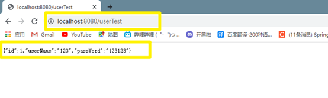
9、总结
导入MyBatis官方Starter。
编写Mapper接口，需@Mapper注解。
编写SQL映射文件并绑定Mapper接口。
在application.yaml中指定Mapper配置文件的所处位置，以及指定全局配置文件的信息 （建议：配置在mybatis.configuration）。
(四)、整合MybatisPlus
1、创建数据库
xxxxxxxxxx81CREATE TABLE USER2(3 id BIGINT(20) NOT NULL COMMENT '主键ID',4 NAME VARCHAR(30) NULL DEFAULT NULL COMMENT '姓名',5 age INT(11) NULL DEFAULT NULL COMMENT '年龄',6 email VARCHAR(50) NULL DEFAULT NULL COMMENT '邮箱',7 PRIMARY KEY (id)8);注意创建完设置id为自增
2、添加数据
xxxxxxxxxx61INSERT INTO USER (id, NAME, age, email) VALUES2(1, 'Jone', 18, 'test1@baomidou.com'),3(2, 'Jack', 20, 'test2@baomidou.com'),4(3, 'Tom', 28, 'test3@baomidou.com'),5(4, 'Sandy', 21, 'test4@baomidou.com'),6(5, 'Billie', 24, 'test5@baomidou.com');3、导入依赖
xxxxxxxxxx51<dependency>2 <groupId>com.baomidou</groupId>3 <artifactId>mybatis-plus-boot-starter</artifactId>4 <version>3.4.1</version>5</dependency>4、排除依赖(因为MyBatisplus里面有jdbc和mybatis所以以前导入的就不要了)

5、MybatisPlus中的自动配置
MybatisPlus自动配置好了mapper的映射路径,默认为:classpath:/mapper/**/xml
在类路径所有子文件下只要存在mapper文件,就把mapper下的xml文件都变为映射文件@Mapper 标注的接口也会被自动扫描，直接 @MapperScan("com.lun.boot.mapper")批量扫描。
6、MybatisPlus的优点就是mapper接口直接继承BaseMapper就可以进行简单的增删查改
5、开启SpringBoot的Mapper注解扫描
xxxxxxxxxx81//开启Mapper扫描2("com.myspringboot.houtai.mapper")3public class HoutaiApplication {4 5 public static void main(String[] args) {6 SpringApplication.run(HoutaiApplication.class, args);7 }8 }7、编写实体类User
xxxxxxxxxx141public class User {4 5 //@TableField注解在添加数据库的时候排除的属性6 (exist = false)7 private String userName;8 (exist = false)9 private String passWord;10 private Long id;11 private String name;12 private Integer age;13 private String email;14}8、创建mapper类
xxxxxxxxxx31public interface UserMapper extends BaseMapper<User> {3}9、测试
xxxxxxxxxx141class HoutaiApplicationTests {4
5 6 private UserMapper userMapper;7
8 9 void contextLoads() {10
11 List<User> userList = userMapper.selectList(null);12 userList.forEach(System.out::println);13 }14}(五)、CRUD
1、分页功能
Service层
接口实现Iservice<操作的实体类>(官方Service)里面有很多数据库方法
xxxxxxxxxx21public interface UserService extends IService<User> {2}
Service类继承ServiceImpl<操作的实体类> 实现 UserService接口,里面有调用UserService实现的IService接口中的方法
xxxxxxxxxx31public class UserServiceImpl extends ServiceImpl<UserMapper,User> implements UserService {3}
Controller层
xxxxxxxxxx81("/dynamic_table")2public String dynamic_table((value = "pg",defaultValue = "1")int pg ,Model model) {3 //从第几页开始,一页多少数据4 Page<User> page = new Page<>(pg,2);5 Page<User> userPage = userService.page(page, null);6 model.addAttribute("users", userPage);7 return "table/dynamic_table";8}现在虽然分页了,分页了,但是不能用,需要开启
开启分页功能
xxxxxxxxxx71// 最新版2public MybatisPlusInterceptor mybatisPlusInterceptor() {4 MybatisPlusInterceptor interceptor = new MybatisPlusInterceptor();5 interceptor.addInnerInterceptor(new PaginationInnerInterceptor(DbType.*H2*));6 return interceptor;7}HTML设置
xxxxxxxxxx61<ul>2 <li class="prev disabled"><a th:href="@{/dynamic_table(pg=users.current-1)}">← Prev</a></li>3 <li th:class="${num==users.current?'active':''}" th:each="num : ${#numbers.sequence(1,users.pages)}">4 <a th:href="@{/dynamic_table(pg=${num})}">[[${num}]]</a></li>5 <li class="next disabled"><a th:href="@{/dynamic_table(pg=users.current+1)}">Next → </a></li>6</ul>测试

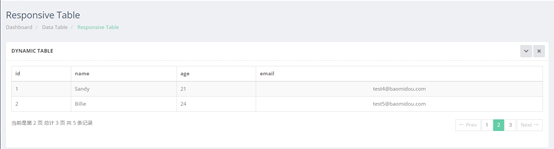
2、删除功能
Controller
xxxxxxxxxx101("/user/delete/{id}")2public String deleteUser(("id")Long id,3 (value = "pg",defaultValue = "1")Integer pg,4 RedirectAttributes ra){5 //根据id删除用户6 userService.removeById(id);7 //重定向的时候往后添加数据8 ra.addAttribute("pg",pg);9 return "redirect:/dynamic_table";10}HTML
xxxxxxxxxx21<td>2 <a th:href="@{/user/delete/{id}(id=${user.id},pg=${users.current})}" class="btn btn-danger btn-sm" type="button">删除</a></td>二十、JUnit5
(一)、简介
1、Spring Boot 2.2.0 版本开始引入 JUnit 5 作为单元测试默认库
2、作为最新版本的JUnit框架，JUnit5与之前版本的JUnit框架有很大的不同。由三个不同子项目的几个不同模块组成。
JUnit 5 = JUnit Platform + JUnit Jupiter + JUnit Vintage
2.1、JUnit Platform: Junit Platform是在JVM上启动测试框架的基础，不仅支持Junit自制的测试引擎，其他测试引擎也都可以接入。
2.2、JUnit Jupiter: JUnit Jupiter提供了JUnit5的新的编程模型，是JUnit5新特性的核心。内部包含了一个测试引擎，用于在Junit Platform上运行。
2.3、JUnit Vintage: 由于JUint已经发展多年，为了照顾老的项目，JUnit Vintage提供了兼容JUnit4.x，JUnit3.x的测试引擎。
3、注意: SpringBoot 2.4 以上版本移除了默认对 Vintage 的依赖。如果需要兼容JUnit4需要自行引入（不能使用JUnit4的功能 @Test）
(二)、导入依赖
xxxxxxxxxx51<dependency>2 <groupId>org.springframework.boot</groupId>3 <artifactId>spring-boot-starter-test</artifactId>4 <scope>test</scope>5</dependency>(三)、想要使用Junit4功能就需要导入Vintage
xxxxxxxxxx111<dependency>2 <groupId>org.junit.vintage</groupId>3 <artifactId>junit-vintage-engine</artifactId>4 <scope>test</scope>5 <exclusions>6 <exclusion>7 <groupId>org.hamcrest</groupId>8 <artifactId>hamcrest-core</artifactId>9 </exclusion>10 </exclusions>11</dependency>(四)、常用的注解
@Test：表示方法是测试方法。但是与JUnit4的@Test不同，他的职责非常单一不能声明任何属性，拓展的测试将会由Jupiter提供额外测试
@ParameterizedTest：表示方法是参数化测试。
@RepeatedTest：表示方法可重复执行。
@DisplayName：为测试类或者测试方法设置展示名称。
@BeforeEach：表示在每个单元测试之前执行。
@AfterEach：表示在每个单元测试之后执行。
@BeforeAll：表示在所有单元测试之前执行。
@AfterAll：表示在所有单元测试之后执行。
@Tag：表示单元测试类别，类似于JUnit4中的@Categories。
@Disabled：表示测试类或测试方法不执行，类似于JUnit4中的@Ignore。
@Timeout：表示测试方法运行如果超过了指定时间将会返回错误。
@ExtendWith：为测试类或测试方法提供扩展类引用。
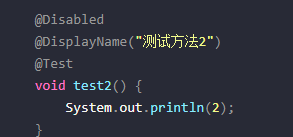
(五)、断言
1、简单断言
| 方法 | 说明 |
|---|---|
| assertEquals | 判断两个对象或两个原始类型是否相等 |
| assertNotEquals | 判断两个对象或两个原始类型是否不相等 |
| assertSame | 判断两个对象引用是否指向同一个对象 |
| assertNotSame | 判断两个对象引用是否指向不同的对象 |
| assertTrue | 判断给定的布尔值是否为 true |
| assertFalse | 判断给定的布尔值是否为 false |
| assertNull | 判断给定的对象引用是否为 null |
| assertNotNull | 判断给定的对象引用是否不为 null |
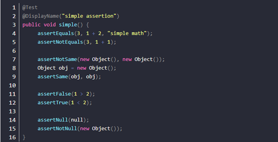
2、数组断言
通过 assertArrayEquals 方法来判断两个对象或原始类型的数组是否相等。
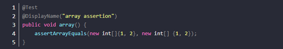
3、组合断言
assertAll()方法接受多个 org.junit.jupiter.api.Executable 函数式接口的实例作为要验证的断言，可以通过 lambda 表达式很容易的提供这些断言。

4、异常断言
方法中出异常顺利执行
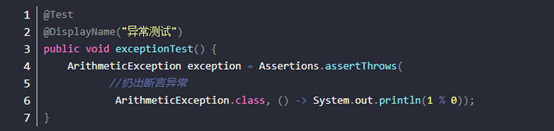
5、超时断言
Assertions.assertTimeout()为测试方法设置了超时时间。
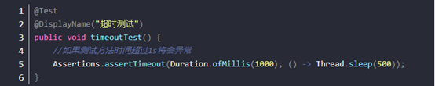
6、快速失败(直接退出程序)
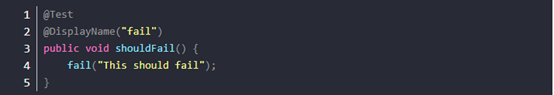
(六)、前置条件
Unit 5 中的前置条件（assumptions【假设】）类似于断言，不同之处在于不满足的断言**assertions会使得测试方法失败，而不满足的前置条件只会使得测试方法的执行终止**。
前置条件可以看成是测试方法执行的前提，当该前提不满足时，就没有继续执行的必要。

assumeTrue 和 assumFalse 确保给定的条件为 true 或 false，不满足条件会使得测试执行终止。
assumingThat 的参数是表示条件的布尔值和对应的 Executable 接口的实现对象。只有条件满足时，Executable 对象才会被执行；当条件不满足时，测试执行并不会终止。
(七)、嵌套测试
JUnit 5 可以通过 Java 中的内部类和@Nested 注解实现嵌套测试，从而可以更好的把相关的测试方法组织在一起。在内部类中可以使用@BeforeEach 和@AfterEach注解，而且嵌套的层次没有限制。
类里面包装类

类中包括
(八)、参数化测试
利用@ValueSource等注解
@ValueSource: 为参数化测试指定入参来源，支持八大基础类以及String类型,Class类型
@NullSource: 表示为参数化测试提供一个null的入参
@EnumSource: 表示为参数化测试提供一个枚举入参
@CsvFileSource：表示读取指定CSV文件内容作为参数化测试入参
@MethodSource：表示读取指定方法的返回值作为参数化测试入参(注意方法返回需要是一个流)
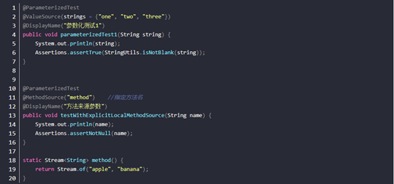
(九)、Junit4升级
在进行迁移的时候需要注意如下的变化：
· 注解在 org.junit.jupiter.api 包中，断言在 org.junit.jupiter.api.Assertions 类中，前置条件在 org.junit.jupiter.api.Assumptions 类中。
· 把@Before 和@After 替换成@BeforeEach 和@AfterEach。
· 把@BeforeClass 和@AfterClass 替换成@BeforeAll 和@AfterAll。
· 把@Ignore 替换成@Disabled。
· 把@Category 替换成@Tag。
· 把@RunWith、@Rule 和@ClassRule 替换成@ExtendWith。
二十一、监控功能
(一)、说明
未来每一个微服务在云上部署以后，我们都需要对其进行监控、追踪、审计、控制等。SpringBoot就抽取了Actuator场景，使得我们每个微服务快速引用即可获得生产级别的应用监控、审计等功能。
(二)、SpringBoot1和SpringBoot2监控的不同
1、SpringBoot Actuator 1.x
· 支持SpringMVC
· 基于继承方式进行扩展
· 层级Metrics配置
· 自定义Metrics收集
· 默认较少的安全策略
2、SpringBoot Actuator 2.x
· 支持SpringMVC、JAX-RS以及Webflux
· 注解驱动进行扩展
· 层级&名称空间Metrics
· 底层使用MicroMeter，强大、便捷默认丰富的安全策略
(三)、使用
1、导入依赖
xxxxxxxxxx41<dependency>2 <groupId>org.springframework.boot</groupId>3 <artifactId>spring-boot-starter-actuator</artifactId>4</dependency>默认只启动shutdown如果开启其他需要配置开启
2、开启全部功能
xxxxxxxxxx61management2 endpoints3 enabled-by-defaulttrue #暴露所有端点信息4 web5 exposure6 include'*' #以web方式暴露访问http://localhost:8080/actuator
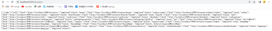
3、监控列表
有一些监控端点存在二级监控端点
测试例子
http://localhost:8080/actuator/beans
http://localhost:8080/actuator/configprops
http://localhost:8080/actuator/metrics
http://localhost:8080/actuator/metrics/jvm.gc.pause
http://localhost:8080/actuator/metrics/endpointName/detailPath
4、端点的开启与禁用

如果要开启单个功能需要将全部功能注释
5、定制Endpoint(以Health为例)
xxxxxxxxxx131management2 endpoints3 enabled-by-defaultfalse #禁止暴露所有端点信息4 web5 exposure6 include'*' #以web方式暴露7 endpoint8 health9 enabledtrue # 开启health端点10 show-detailsalways # 显示信息为全部11
12 info13 enabledtrue # 开启info端点现在只开启了health和info端点
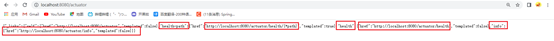
(四)、Web页面数据显示
1、首先建一个带web工程的项目

2、导入Server依赖
xxxxxxxxxx51<dependency>2 <groupId>de.codecentric</groupId>3 <artifactId>spring-boot-admin-starter-server</artifactId>4 <version>2.3.1</version>5</dependency>3、启动类添加注解
xxxxxxxxxx21@EnableAutoConfiguration2@EnableAdminServer
4、修改tomcat端口以免和主服务端口冲突
xxxxxxxxxx11server.port=88885、主服务添加客户端依赖
xxxxxxxxxx51<dependency>2 <groupId>de.codecentric</groupId>3 <artifactId>spring-boot-admin-starter-client</artifactId>4 <version>2.3.1</version>5</dependency>6、添加服务器地址
xxxxxxxxxx81boot2 admin3 client4 urlhttp//localhost8888 # 访问监控web服务器地址5 instance6 prefer-iptrue # 使用ip注册客户端7application8 namehoutai二十二、profile环境切换
(一)、说明
为了方便多环境适配，Spring Boot简化了profile功能。
默认配置文件application.properites任何时候都会加载。
指定环境配置文件application-{xxx}.yaml
激活指定环境
- 配置文件激活：spring.profiles.active=xxx
- 命令行激活：java -jar sprigboot.jar --spring.profiles.active=xxx --person.name=value（修改配置文件的任意值，命令行优先）
默认配置与环境配置同时生效
同名配置项，profile配置优先
(二)、使用
1、准备环境
1.1、首先创建2个application-xxx.yaml的文件,这里创建的是application-test.yaml和application-shengchan.yaml

1.2、实体类Person
xxxxxxxxxx111//装入容器2//使用配置文件自动装入4("person")5//生成基础方法6public class Person {8 9 private String name;10 private Integer age;11}1.3、设置配置文件application-shengchan.yaml
xxxxxxxxxx61person2 nameshengchan-李四3 age184 5 server6 port9999 #端口号1.4、设置配置文件application-test.yaml
xxxxxxxxxx61person2 nametest-张三3 age184 5 server6 port89892、配置文件模式切换
2.1、主配置文件,当前设置为test
xxxxxxxxxx11spring.profiles.active=test2.2、启动测试


2.3、主配置文件设置为shengchan
xxxxxxxxxx11spring.profiles.active=shengchan2.4、启动测试
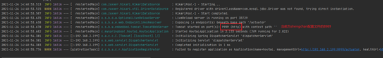
3、命令行切换(在active后面加上环境名称就行)

(三)、@Profile注解
xxxxxxxxxx211注解可以标注在类上,也可以标注在方法上2
3//装入容器4//使用配置文件自动装入6("person")7//生成基础方法8//当前环境为test的时候该类才生效10("test")11public class Person {12 13 private String name;14 private Integer age;15 16 //当前环境为test才生效此方法17 ("test")18 void haha(){19 System.*out*.println("haha");20 }21}(四)、环境组
主配置文件
将huanjing和test添加到myHuanjing组中
xxxxxxxxxx21spring.profiles.group.myHuanjing[0]=test2spring.profiles.group.myHuanjing[1]=shengchan使用myHuanjing组
xxxxxxxxxx11spring.profiles.active=myHuanjing此时application-test.yaml和application-shengchan.yaml变为
Application-shengchan.yaml
xxxxxxxxxx41person2 nameshengchan-李四3
4
application-test.yaml
xxxxxxxxxx21person2 age18组合来给Person实体类赋值
开始测试

二十三、配置文件加载优先级
(一)、外部配置源
1、java属性文件(application.properties)
2、YAML文件(application.yaml)
3、环境变量
4、命令行参数(java –jar xxx.jar -- 参数值)
(二)、配置文件查找位置
1、越往下越优先
2、classpath跟路径
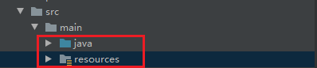
3、根路径下的config目录
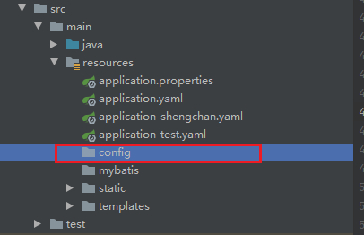
4、jar包当前前目录
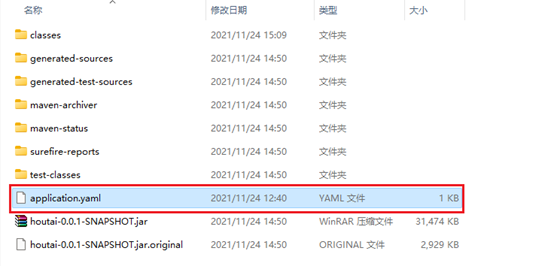
5、jar包当前config目录

6、jar包当前config目录下的字目录
(三)、配置文件的加载顺序
1、当前jar包内部的application.proerties和application.yaml
2、当前jar包内部的application-{profile}.properties和application-{profile}.yaml
3、打包jar包目录下的application.proerties和application.yaml
4、打包jar包目录下的application-{profile}.properties和application-{profile}.yaml
二十四、自定义starter
(一)、创建一个空的工程


(二)、添加一个普通的Maven

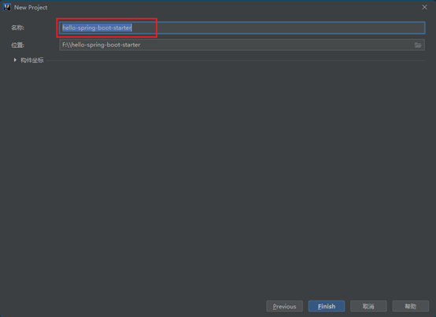
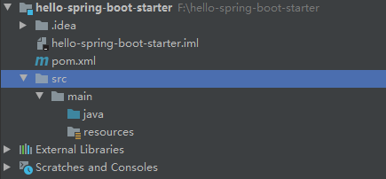
(二)、创建一个SpringBoot工程

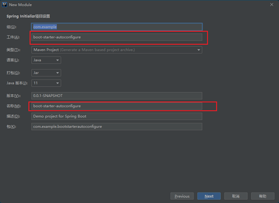
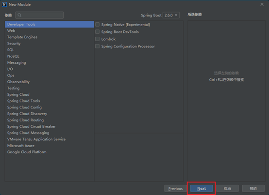
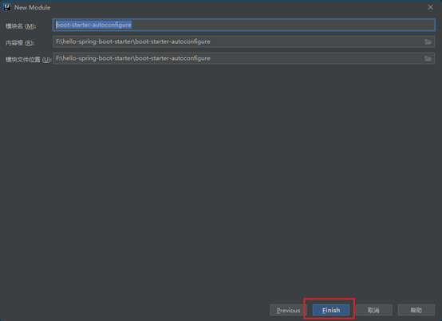
(三)、普通Maven引入SpringBoot的依赖使其导入Maven自动导入SpringBoot
xxxxxxxxxx51<dependency>2 <groupId>com.example</groupId>3 <artifactId>boot-starter-autoconfigure</artifactId>4 <version>0.0.1-SNAPSHOT</version>5</dependency>(四)、AutoConfiguration项目创建四个文件自动配置文件

(五)、配置HelloServiceAutoConfiguration类
xxxxxxxxxx131//Spring配置类2//绑定类并注册到容器中4(HelloProperties.class)5public class HelloServiceAutoConfiguration {6
7 //如果容器中没有该类就添加8 (HelloService.class)9 10 public HelloService helloService(){11 return new HelloService();12 }13}(六)、HelloProperties类(用于绑定配置文件装入值)
xxxxxxxxxx221("hello")2public class HelloProperties {3
4 private String qianzhi;5 private String houzhi;6
7 public String getQianzhi() {8 return qianzhi;9 }10
11 public HelloProperties(String qianzhi) {12 this.qianzhi = qianzhi;13 }14
15 public String getHouzhi() {16 return houzhi;17 }18
19 public void setHouzhi(String houzhi) {20 this.houzhi = houzhi;21 }22}(七)、HelloService(主要功能是给容器中添加组件实现业务)
xxxxxxxxxx81public class HelloService {2
3 4 private HelloProperties helloProperties;5 public String sayHello(String name){6 return helloProperties.getQianzhi()+name+helloProperties.getHouzhi();7 }8}(八)、设置其他项目导入依赖自动启动autoConfiguration类
在META-INF下的spring.factories中添加
xxxxxxxxxx21org.springframework.boot.autoconfigure.EnableAutoConfiguration=\2com.example.bootstarterautoconfigure.auto.HelloServiceAutoConfiguration.java(九)、普通Maven和自动配置类打包在本地仓库
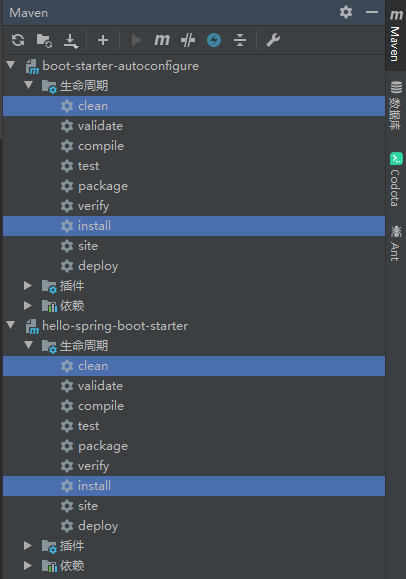
(十)、创建一个SpringBoot测试

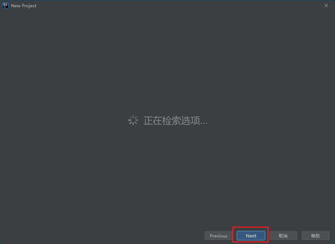
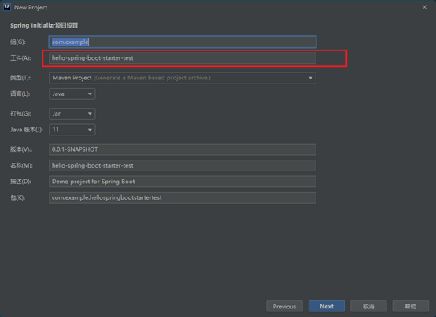

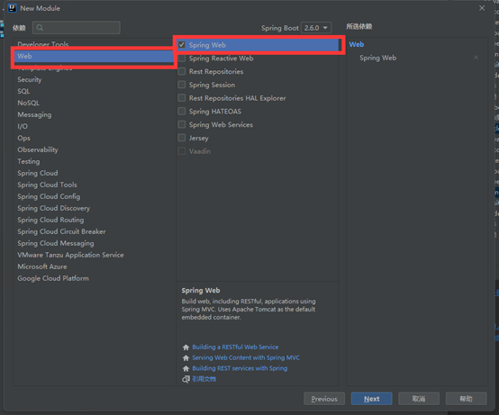
(十一)、测试SpringBoot导入普通Maven依赖
xxxxxxxxxx51<dependency>2 <groupId>org.example</groupId>3 <artifactId>hello-spring-boot-starter</artifactId>4 <version>1.0-SNAPSHOT</version>5</dependency> 
(十二)、给自己的starter的Helloproperties赋值
xxxxxxxxxx21hello.qianzhi=aaa2hello.houzhi=bbb(十三)、使用Controller测试是否成功
xxxxxxxxxx141public class StartTestController {3 4 5 HelloService helloService;6 7 8 ("/startertest")9 public String login(){10 11 String a = "aa";12 return helloService.sayHello("张三");13 }14}(十四)、网页测试

二十五、Springboot2创建启动流程
(一)、创建过程
底层的一个方法会去spring.factories文件找引导器,初始化器监听器,然后通过
xxxxxxxxxx91private Class<?> deduceMainApplicationClass() {2 try {3 StackTraceElement[] stackTrace = new RuntimeException().getStackTrace();4 for (StackTraceElement stackTraceElement : stackTrace) {5 if ("main".equals(stackTraceElement.getMethodName())) {6 return Class.*forName*(stackTraceElement.getClassName());7 }8 }9}循环遍历栈找到第一个main方法找到启动器
二十六、Springboot日志
(一)、SpringBoot日志级别
trace 都输出
debug 调试中输出
info 一些想要的信息
warn 警告
error 报错
(二)、SpringBoot默认级别
SpringBoot默认级别为info

(三)、修改日志默认级别
在配置文件配置com.myspringboot下的类日志级别为trace
xxxxxxxxxx11logging.level.com.myspringboot=trace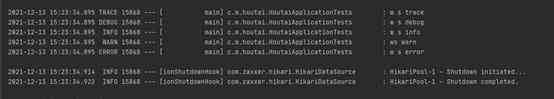
(四)、日志的其他设置
xxxxxxxxxx51logging.level.com.myspringboot=trace2logging.pattern.console=控制台输出格式3logging.pattern.file=日志输出到文件设置4logging.file.name=指定日志输出的文件(可以绝对路径,也可以相对路径)5logging.file.path=和file.name差不多,同时存在使用file.name(五)、指定日志配置文件
在根路径下创建对应的文件名

如果配置配置文件不加-spring就被日志框架解析,没有spring的功能
比如说:logback日志,你配置文件是logback.xml就没有springboot的功能,如果配置文件名为:logback-spring.xml就会被SpringBoot解析,就可以使用springboot的强大功能
二十七、集成redis
(一)、 添加依赖
xxxxxxxxxx41<dependency>2 <groupId>org.springframework.boot</groupId>3 <artifactId>spring-boot-starter-data-redis</artifactId>4</dependency>(二)、配置连接源
xxxxxxxxxx161#Redis服务器地址2spring.redis.host=192.168.2.1663#Redis服务器连接端口4spring.redis.port=63795#Redis数据库索引（默认为0）6spring.redis.database=07#连接超时时间（毫秒）8spring.redis.timeout=18000009#连接池最大连接数（使用负值表示没有限制）10spring.redis.lettuce.pool.max-active=2011#最大阻塞等待时间(负数表示没限制)12spring.redis.lettuce.pool.max-wait=-113#连接池中的最大空闲连接14spring.redis.lettuce.pool.max-idle=515#连接池中的最小空闲连接16spring.redis.lettuce.pool.min-idle=0(三)、存取值
201public class RedisController {3
4 5 private RedisTemplate<Object,Object> redisTemplate;6
7 //装入值8 (value = "/put")9 10 public String putDate(String key,String value){11 redisTemplate.opsForValue().set(key, value);12 return "值已存入redis中";13 }14
15 //取值16 (value = "/get")17 18 public Object getDate(String key){19 return "值="+key+"---------value="+redisTemplate.opsForValue().get(key);20 }